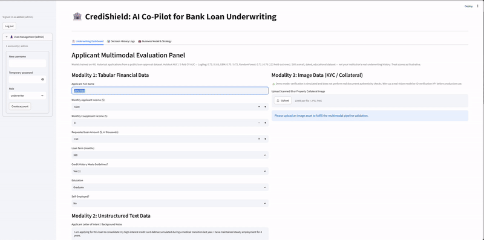
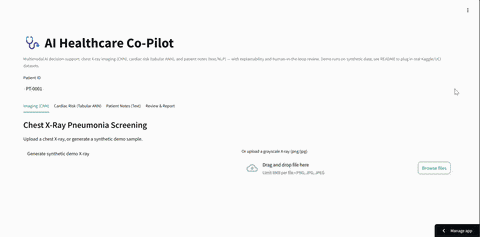

Case 01 · Real-world usefulness
CrediShield
AI co-pilot for bank loan underwriting. Replaces manual document review and risk calculation with automated scoring, charts, and a PDF summary.

Case 02 · Technical depth
Healthcare AI Co-Pilot
Multimodal decision support across chest X-ray imaging, tabular cardiac risk, and clinical notes — one review flow, three data types.

Case 03 · Foundational proof
Task Management API
FastAPI CRUD, then Supabase Auth added on top — signup, login, JWT-protected routes. Smallest case, cleanest proof of the actual stack.

Case 04 · Workflow vs. agent, MCP
Weekly Brief Workflow + MCP
An n8n pipeline with 5 logged real runs, correctly classified as a workflow — plus a live MCP connector pulling my real Google Calendar data.